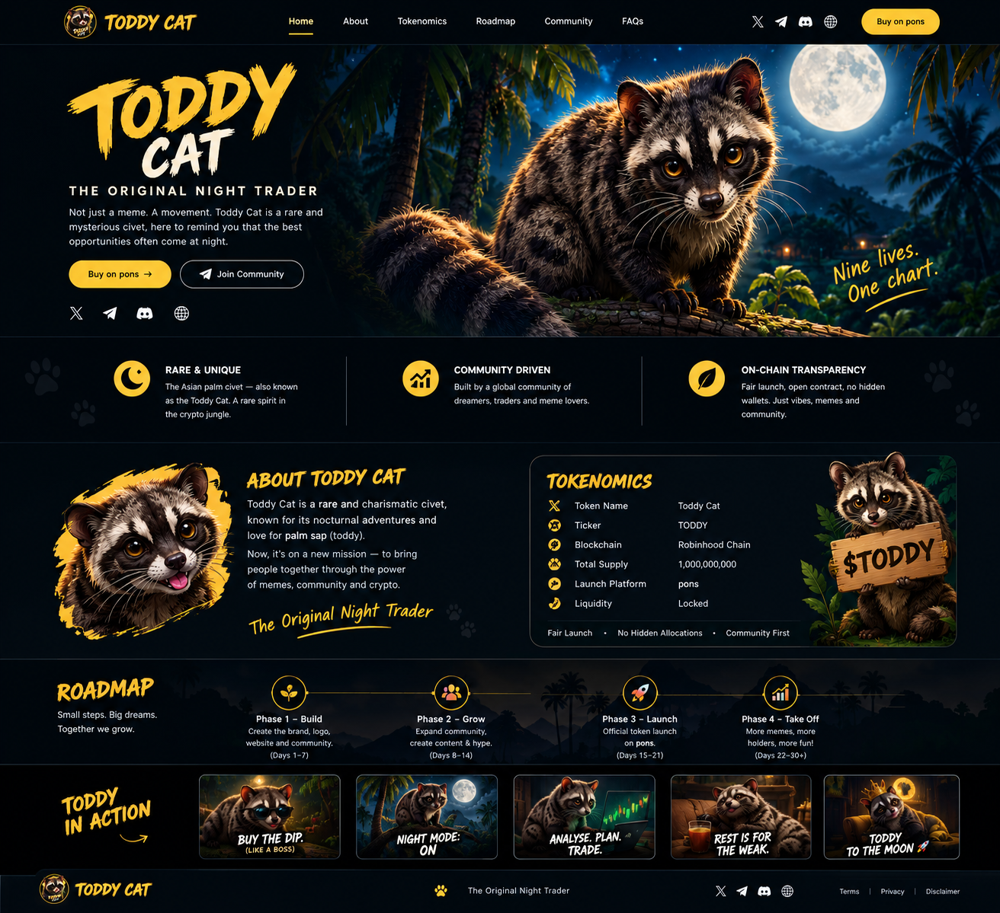
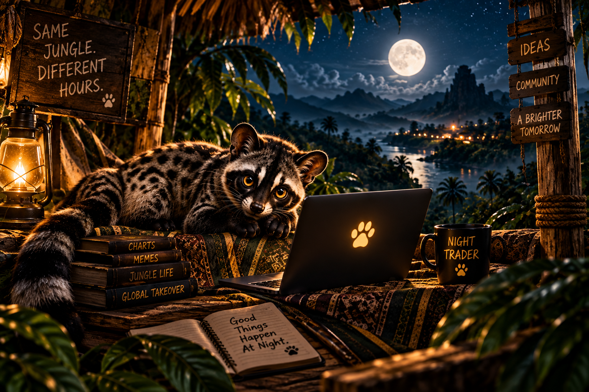
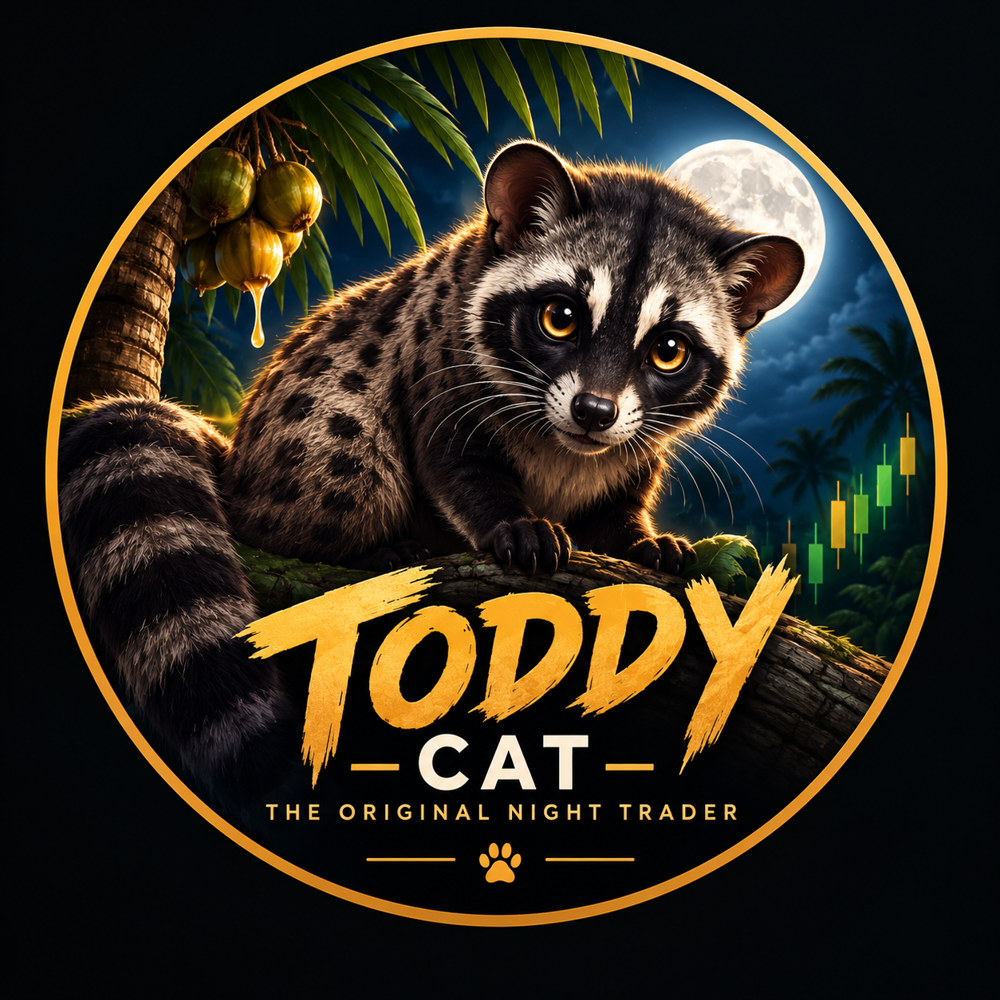

WATCH THE JUNGLE.
Before the noise starts, Toddy watches. The community learns the character through stories, memes and late-night internet culture.
Meet Toddy Cat — the jungle’s after-hours legend. Nocturnal by nature. Online by instinct.

“Toddy Cat” is a traditional name for the Asian palm civet, a nocturnal mammal found across parts of Asia.
That is the starting point — not a random mascot. Toddy is curious, elusive and active after dark. The crypto character grows from the real animal instead of pretending it is something it isn't.
Before the noise starts, Toddy watches. The community learns the character through stories, memes and late-night internet culture.
Charts don't sleep. Memes don't sleep. The Night Shift is for the people still online.
The jungle changes every night. Toddy's universe is meant to grow with community creativity.
Names and tickers can be copied. After launch, the official contract published on toddycat.xyz is the source of truth.
No invented market cap, liquidity, volume or exchange claims. Real figures only when real on-chain data exists.
The character belongs in memes, clips, replies and community creations — not only on a homepage.
Never trust a DM, reply or random token link. Compare the contract with the official address published here.
The address will be published here when the token is actually launched. Until then, there is nothing to copy and no fake contract to promote.
Anyone can copy the name. Anyone can copy the ticker. Anyone can copy the artwork, website style or Telegram name.
Before trading after launch, verify the official contract published on toddycat.xyz and use the official links. Never send funds because a stranger says “this is the real one.”


“I said one last chart.”
YOUR CAPTION HERE →Sees every candle. Says nothing. Posts at 2:13 AM.
“It’s not a dip. It’s a jungle trail.”
“What if the real alpha was the friends we made?”
Make a Toddy meme: use the character, add your own caption, and share it with the Night Shift. Send PNG, JPG, or GIF to Telegram; include your caption or X handle if you want. Community submissions may be reviewed before featuring. Don’t include private or sensitive information.
Website, X, Telegram, visual identity and the first meme library.
Verified contract, trading links and real on-chain information once live.
Community memes, creators, short-form content and collaborations.
Expand the creative universe with the community rather than inventing empty promises.
Follow the story. Make the memes. Bring your people. Stay curious. The Night Shift starts before the token does.